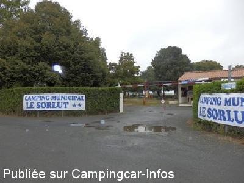
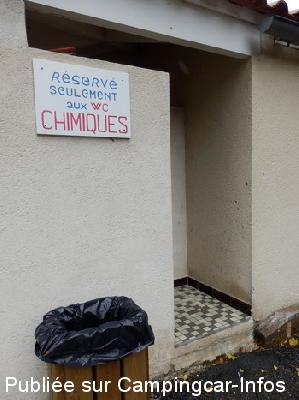

AC = Camping acceptant les camping-cars de :
COZES
(N° 525)
Accès/adresse :
Route de Saujon
Camping Municipal Le Sorlut **
17120 COZES
Camping Municipal Le Sorlut **
17120 COZES
Latitude : (Nord) 45.58657° Décimaux ou 45° 35′ 11′′
Longitude : (Ouest) -0.83565° Décimaux ou 0° 50′ 8′′
Tarif : 2012
Adulte : 2 à 2.50 €
Enfant - 7 ans : 1,20 à 1,40 €
Emplacement : 2,15 à 2,65 €
Animal : 0,75 à 0,85 €
lave-linge : 4,80 €
Services :


Autres informations :
Ouvert du 15/4 au 15/10
120 emplacements, ombragés et plats.
Tél camping : +33(0)546 907 599
http://camping-le-sorlut.com/

Le 14/09/2013 par Voyageur 65

Le 14/09/2013 par Voyageur 65
de
Charvin Dominique
le 06/08/2008 :
Grand camping ombragé et plat, beaucoup de monde mais début août c'est normal et totalement imbattable au niveau prix, 7,18€ pour deux personnes en pleine saison, sans électricité. Cela ne vaux vraiment pas le coup d'aller s'entasser dans les aires de services du bord de mer à quelques kilomètres de là.
Grand camping ombragé et plat, beaucoup de monde mais début août c'est normal et totalement imbattable au niveau prix, 7,18€ pour deux personnes en pleine saison, sans électricité. Cela ne vaux vraiment pas le coup d'aller s'entasser dans les aires de services du bord de mer à quelques kilomètres de là.